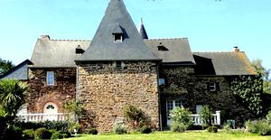
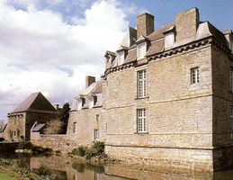
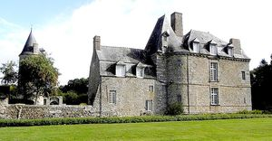
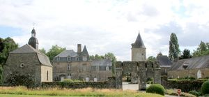
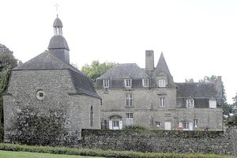
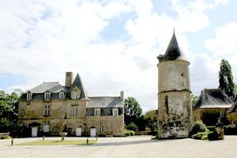
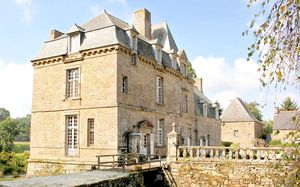
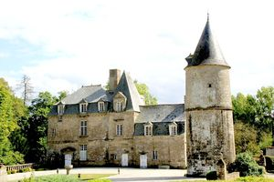

Recensement Jean-Claude Truffet
| Département | 35 — Ille-et-Vilaine |
| Canton | Val-Couesnon |
| Commune | St-Hilaire des Landes |
| Type d'édifice | Château |
| Période d'origine | XIV-XVII |
| Coordonnées GPS | 48° 20' 42" Nord, 1° 20' 55" Ouest |








La HAYE, près du château une enceinte fortifiée, Le nom même de "la Haye" La seigneurie de la Haye Saint-Hilaire est une des plus anciennes connues dans le pays de Fougères. Les premiers seigneurs apparurent dans les textes au XIIe siècle et la seigneurie est restée dans les mains de la même famille, par filiation directe, jusqu'à aujourd'hui. en 1163 à Guillaume de la Haye fit don à l'abbaye de Rillé de tous les droits, Jean de la Haye épousa Marguerite de lignières un fils qui épousa Marie Cassin . Au XVIe siècle Léon II de la Haye un fils René. Cette seigneurie possédait des fiefs à Saint-Hilaire, mais également dans les paroisses voisines : Saint-Marc-le-Blanc, Saint-Sauveur-des-Landes, Saint-Etienne-en-Coglès, Saint-Ouen-les-Alleux ou La Chapelle Saint-Aubert. Anne de la Haye décède en 1699 et Louise de Canabert sa femme, laisse le domaine à son fils Basile rend aveu pour la seigneurie en 1700, s'éteint sans postérité, laissant le domaine à un neveu Christophe qui épouse Bénigne de la Motte-Morel la vielle de la Révolution, le domaine est au mains de Louis François de la Haye ce dernier émigre les biens vendu, au retour il parvient à racheter une partie du domaine et meurt à Rennes en 1800 passa à ses deux fils Louis et Charles-Edouard prendront par dans la chouannerie. Le château est resté depuis ses origines la propriété de la famille La Haye Saint-Hilaire. En 2019, les héritiers du comte Lionel de La Haye Saint-Hilaire, décédé en mars 2016, mettent le château en vente.
La HAYE, fut érigée en châtellenie en 1593 et 1619, avec droit de haute justice au bourg de Saint-Hilaire. La famille de la Haye Saint-Hilaire donna cinq gouverneurs de Fougères dont l'un d'eux, René (1568-1593), donna son nom à la tour d'entrée sud du château de Fougères. L'actuel château est composé d'éléments de diverses époques, allant du XIVe siècle au XVIIe siècle. De l'époque médiévale, il reste la structure globale du site, avec la cour carrée bordée de douves, une ancienne porte fortifiée et la tour de guet située en son centre. Ces éléments sont les vestiges conservés après les travaux entrepris par Henri de Saint-Hilaire au début du XVIIe siècle dans le but d'agrandir et de fortifier sa demeure, mais ces nouvelles fortifications furent interdites par le roi en 1619. Henri mourut en 1622, après avoir modifié l'ancien donjon, implanté au sud-ouest de la cour, mais sans avoir terminé son projet initial. De cette première phase de travaux, il subsiste la partie Est du logis ainsi que la partie centrale. Le logis dans la continuité fut construit dans la deuxième moitié du XVIIe siècle. Autour d'une cour carrée, le château comprend un logis principal (au sud-est), un pavillon, des communs (à l'ouest) et une chapelle dédiée à la Sainte-Famille (dans langle nord-est). Une tour ronde datant du XIIIe siècle se trouve au milieu de la cour. Lensemble est entouré de douves ; un pont et un portail marque lentrée principale de l'ensemble.
famille de la Haye Saint-Hilaire
"
St-Thurial, Haye-Chapeau grav-1 Haye GPS : 48° 20' 42" Nord, 1° 20' 55" Ouest